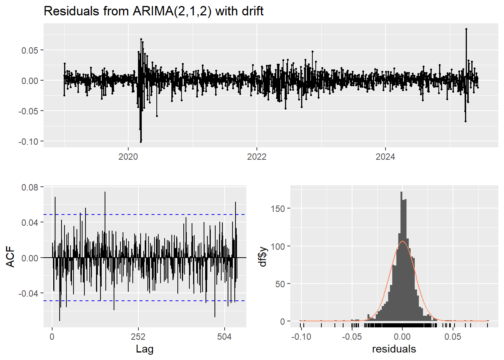
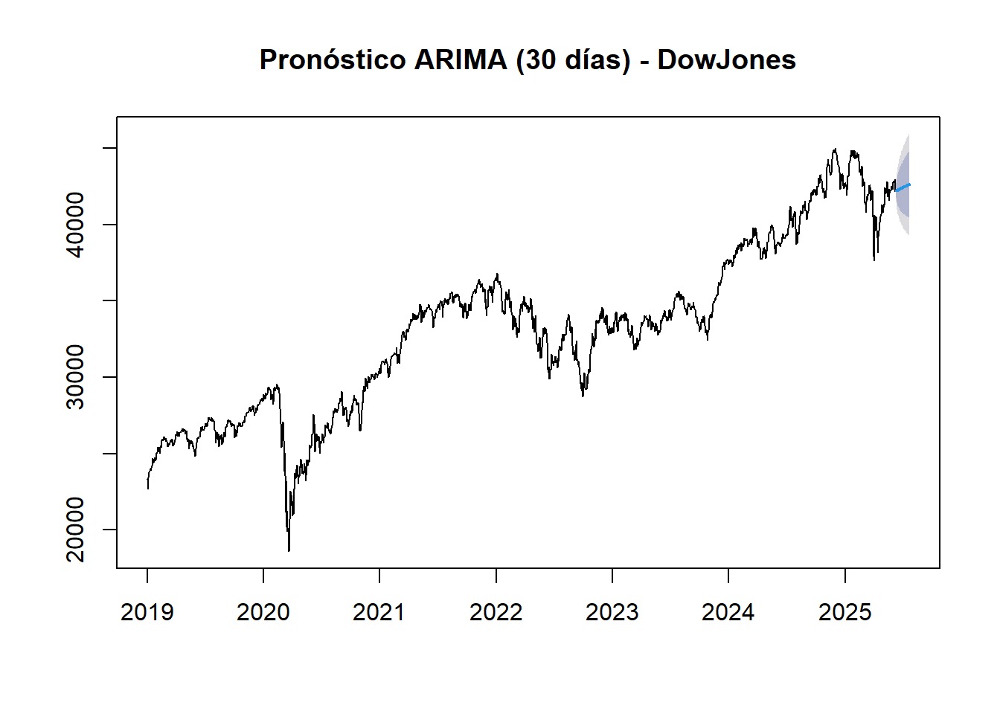
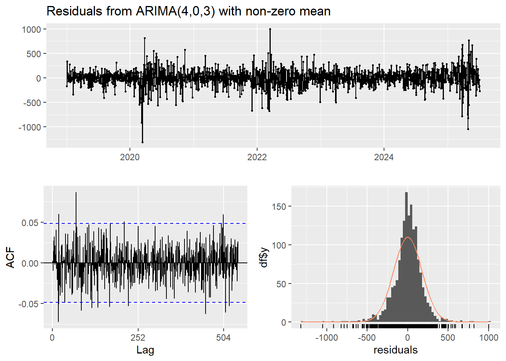
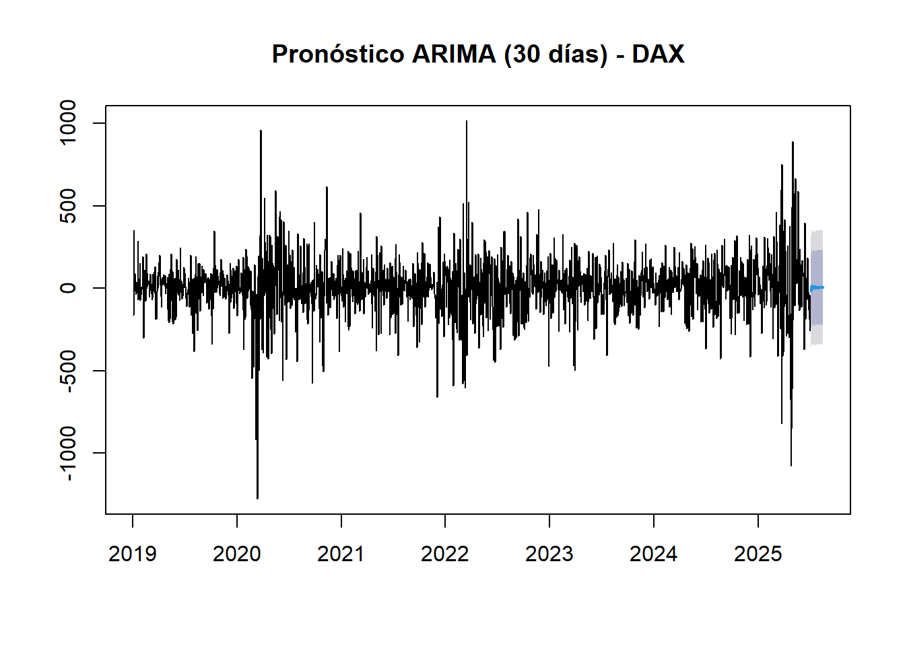
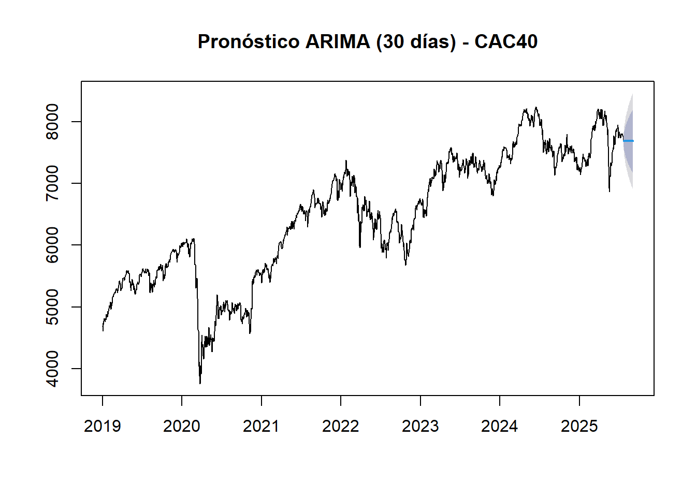
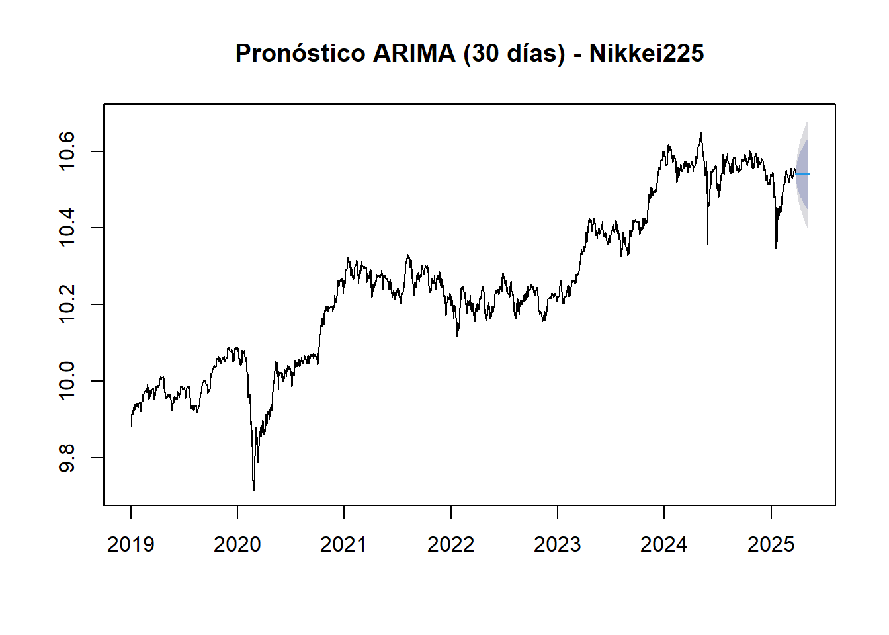
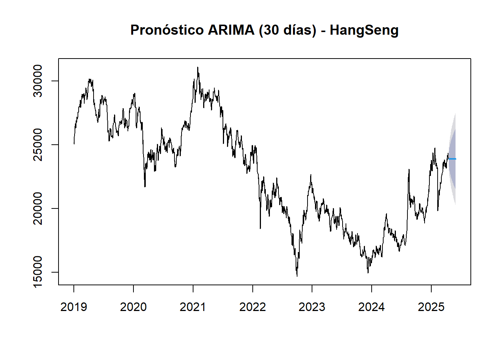
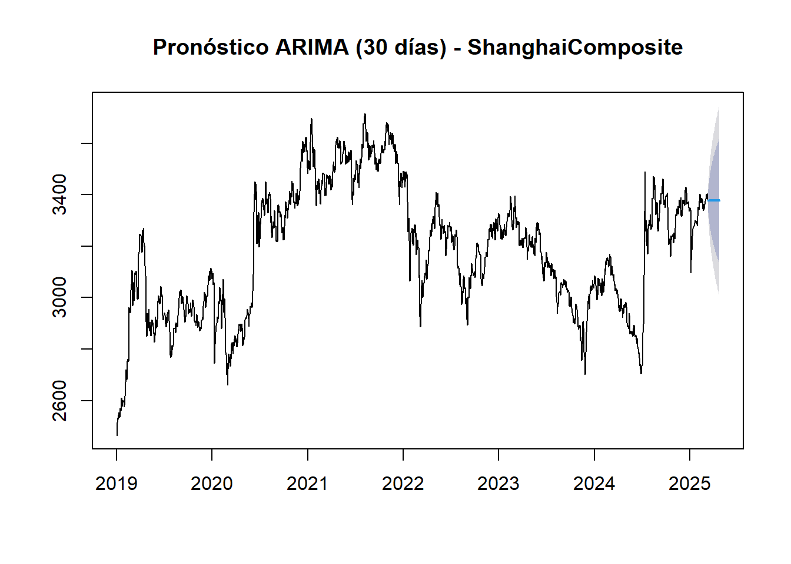

Chapter 6 Desarrollo Actividad 5. Implementación de la Metodología Box-Jenkins (Modelo ARIMA)
6.1 Fundamentos teóricos del modelo ARIMA y Box-Jenkins
La metodología Box-Jenkins, base del modelo ARIMA (Autoregressive Integrated Moving Average), es uno de los enfoques más robustos y utilizados en el análisis de series de tiempo. Se centra en modelar la dependencia temporal de los datos y consta de tres componentes:
- AR (autoregresivo): Utiliza valores pasados de la serie para predecir el valor actual.
- I (integrado): Representa la diferenciación necesaria para hacer la serie estacionaria.
- MA (media móvil): Usa los residuos (errores pasados) para mejorar la predicción.
6.1.1 Etapas de la metodología Box-Jenkins:
- Identificación: Determinar si la serie necesita diferenciación y establecer los valores iniciales de
p,d,q. - Estimación: Ajustar los parámetros del modelo y validar su significancia.
- Diagnóstico: Verificar si los residuos se comportan como ruido blanco.
- Pronóstico: Usar el modelo ajustado para proyectar valores futuros.
El paquete forecast en R proporciona la función auto.arima() que automatiza este proceso, seleccionando el mejor modelo según el criterio AICc (Akaike Information Criterion corregido).
6.2 Implementación de las lógicas y modelos.
Es importante resaltar que como se tienen múltiples series de tiempo, es necesario implementar ciclos que iteren sobres las funciones para poder trabajaro con todos los indices bursatiles, las fases del presente punto son las siguientes:
1. Inicializamos las estructuras de almacenamiento donde se guardarán los pronosticos individuales y las métricas.
2. Definimos la función que se aplicará donde se realiza la estimación automática del modelo y los diagnosticos de residuos.
3. Realizamos los pronosticos y visualizaciones.
4. Almacenamos las predicciones y evaluamos las métricas de error.
5. Aplicamos la función a todos los indices mediante ciclos itarativos, en este caso el ciclo for.
6.3 Resumen e interpretación de las gráficas y resultados de las funciones.
1. SP500 – ARIMA(2,1,2) con drift
Modelo: El modelo ARIMA(2,1,2) con drift muestra significancia en todos los coeficientes, lo cual sugiere una estructura bien ajustada a los datos.
Bondad de ajuste: Métricas muy bajas (MAE = 0.0084, RMSE = 0.0124) y un MAPE de 0.10 indican una excelente capacidad predictiva.
Residuos: Son estacionarios y centrados en cero. El gráfico ACF de residuos muestra autocorrelaciones insignificantes, reforzado por la prueba Ljung-Box (p = 0.9982), lo que indica que el modelo ha capturado correctamente la estructura temporal.
Distribución: Los residuos siguen aproximadamente una distribución normal.
Pronóstico: La proyección para 30 días mantiene la tendencia alcista histórica con bandas de confianza estrechas, lo cual indica alta precisión en la predicción.
2. Dow Jones – ARIMA(5,1,3) con drift
Modelo: Se utiliza un modelo de orden relativamente alto, lo cual puede reflejar una dinámica compleja en esta serie.
Bondad de ajuste: Aunque el MAE (245.21) y el RMSE (355.49) son elevados debido a la escala del índice, el MAPE de 0.77 confirma un buen desempeño porcentual.
Residuos: No se observan patrones significativos ni autocorrelación, confirmado por la prueba de Ljung-Box (p = 1). La distribución de los residuos es simétrica y normal.
Pronóstico: Se observa una continuación de la tendencia creciente reciente, con un intervalo de confianza relativamente estrecho para un índice con tanta variabilidad histórica.
3. Nasdaq – ARIMA(4,1,3) con drift
Modelo: Buena capacidad explicativa con parámetros significativos. Incluye una combinación de términos AR y MA que captura la dinámica del Nasdaq.
Bondad de ajuste: Muy buen ajuste (MAE = 0.0108, RMSE = 0.0152, MAPE = 0.12).
Residuos: Los residuos son ruido blanco y normalmente distribuidos. Ljung-Box (p = 0.992) indica independencia serial.
Pronóstico: Predice estabilidad y una continuación de la tendencia alcista. Las bandas de confianza ajustadas indican una buena capacidad de generalización.
4. DAX – ARIMA(4,0,3) con media distinta de cero
Modelo: Se aplicó sin diferenciación (d = 0), lo cual puede deberse a estacionariedad tras transformaciones previas. Incluye una media distinta de cero.
Bondad de ajuste: MAE (121.65) y RMSE (174.54) elevados en términos absolutos, pero el MAPE de 150.74% es una señal de sobreajuste o mal ajuste.
Residuos: Aunque visualmente parecen normales, el alto MAPE y la varianza sugieren que el modelo no captura adecuadamente la variabilidad relativa del índice.
Pronóstico: El comportamiento futuro proyectado presenta alta incertidumbre, reflejada en las amplias bandas. Precaución al interpretar.
5. CAC 40 – ARIMA(0,1,0)
Modelo: Es un modelo puramente aleatorio con diferenciación (una caminata aleatoria). No incluye ningún componente AR o MA.
Bondad de ajuste: Pese a su simpleza, el modelo muestra métricas aceptables (MAE = 51.4, RMSE = 72.68, MAPE = 0.83).
Residuos: El comportamiento de los residuos es ruido blanco, confirmado por Ljung-Box (p = 0.056). La distribución es aproximadamente normal.
Pronóstico: Debido a la naturaleza del modelo, el pronóstico proyecta una continuidad de la tendencia reciente sin componente estructural. Las bandas son más amplias que en modelos complejos.
6. FTSE 100 – ARIMA(0,1,0)
Modelo: Mismo planteamiento que el CAC 40, es decir, una caminata aleatoria sin términos AR o MA.
Bondad de ajuste: MAE = 48.43, RMSE = 70.81, y MAPE = 0.69, lo cual representa un rendimiento moderado aceptable.
Residuos: No hay autocorrelación significativa (Ljung-Box p = 0.1141), y la distribución es normal.
Pronóstico: Proyección continua de la tendencia, con incertidumbre moderada. Adecuado para horizontes de corto plazo dada su simplicidad.
7. Nikkei 225 – ARIMA(1,1,2)
Modelo: Estructura razonable para datos financieros, permite capturar choques y componentes transitorios.
Bondad de ajuste: Muy buenos indicadores de ajuste (MAE = 0.0093, RMSE = 0.0138, MAPE = 0.09).
Residuos: Distribución normal, sin autocorrelación significativa (p = 0.8749). El modelo cumple con los supuestos de ruido blanco.
Pronóstico: Muestra un comportamiento alcista y confiable, con estrechas bandas de predicción que reflejan confianza del modelo.
8. Hang Seng – ARIMA(0,1,0)
Modelo: Igual que CAC 40 y FTSE 100, una caminata aleatoria sin componente estructural.
Bondad de ajuste: MAE elevado (244.97) y MAPE de 1.10, lo cual refleja dificultades para predecir movimientos relativos del índice.
Residuos: Aunque la distribución es normal y el p-valor de Ljung-Box (0.9091) es alto, la magnitud del error indica que el modelo es poco explicativo en términos relativos.
Pronóstico: Pese a la estructura simple, el comportamiento errático reciente del índice hace que las predicciones deban tomarse con cautela.
9. Shanghai Composite – ARIMA(0,1,0)
Modelo: Nuevamente una caminata aleatoria, posiblemente porque los datos no muestran patrones fuertes tras diferenciación.
Bondad de ajuste: Métricas aceptables (MAE = 23.92, RMSE = 34.58, MAPE = 0.75).
Residuos: Están bien comportados; Ljung-Box p = 0.6892 indica que no hay autocorrelación residual.
Pronóstico: Se proyecta una continuación de la tendencia moderada con baja varianza, aunque limitada capacidad explicativa del modelo.
Code
# Inicializar estructuras para almacenar resultados
resultados_arima <- list()
metricas_arima <- data.frame(
Indice = character(),
MAE = numeric(),
RMSE = numeric(),
MAPE = numeric(),
stringsAsFactors = FALSE
)
# Función para ajustar ARIMA, graficar y evaluar
ajustar_modelo_arima <- function(serie_ts, nombre_indice) {
cat("\n\n==============================\n")
cat("Modelo ARIMA -", nombre_indice, "\n")
cat("==============================\n")
modelo <- auto.arima(serie_ts, seasonal = FALSE)
print(summary(modelo))
# Diagnóstico de residuos
checkresiduals(modelo)
# Pronóstico a 30 días
forecast_arima <- forecast(modelo, h = 30)
plot(forecast_arima, main = paste("Pronóstico ARIMA (30 días) -", nombre_indice))
# Guardar resultados
resultados_arima[[nombre_indice]] <<- list(modelo = modelo, pronostico = forecast_arima)
# Métricas de ajuste
obs <- as.numeric(serie_ts)
pred <- as.numeric(fitted(modelo))
mae_val <- mae(obs, pred)
rmse_val <- rmse(obs, pred)
mape_val <- mape(obs, pred) * 100
metricas_arima <<- rbind(metricas_arima, data.frame(
Indice = nombre_indice,
MAE = round(mae_val, 2),
RMSE = round(rmse_val, 2),
MAPE = round(mape_val, 2)
))
}
# Aplicar modelo a cada índice preparado
for (indice in names(series_preparadas)) {
ajustar_modelo_arima(series_preparadas[[indice]], indice)
}##
##
## ==============================
## Modelo ARIMA - SP500
## ==============================
## Series: serie_ts
## ARIMA(2,1,2) with drift
##
## Coefficients:
## ar1 ar2 ma1 ma2 drift
## -1.7347 -0.8778 1.6110 0.7360 5e-04
## s.e. 0.0276 0.0266 0.0387 0.0369 3e-04
##
## sigma^2 = 0.0001549: log likelihood = 4812.81
## AIC=-9613.62 AICc=-9613.56 BIC=-9581.27
##
## Training set error measures:
## ME RMSE MAE MPE MAPE
## Training set -6.821801e-07 0.01242211 0.008409967 -9.055436e-05 0.101758
## MASE ACF1
## Training set 0.04908003 0.0168745
##
## Ljung-Box test
##
## data: Residuals from ARIMA(2,1,2) with drift
## Q* = 246.25, df = 320, p-value = 0.9992
##
## Model df: 4. Total lags used: 324##
##
## ==============================
## Modelo ARIMA - DowJones
## ==============================
## Series: serie_ts
## ARIMA(5,1,3) with drift
##
## Coefficients:
## ar1 ar2 ar3 ar4 ar5 ma1 ma2 ma3 drift
## -0.6572 0.8702 0.7710 -0.0778 -0.011 0.6007 -0.8350 -0.7046 11.3388
## s.e. 0.0993 0.0486 0.1006 0.0321 0.037 0.0959 0.0395 0.0785 5.2315
##
## sigma^2 = 127214: log likelihood = -11822.06
## AIC=23664.13 AICc=23664.26 BIC=23718.04
##
## Training set error measures:
## ME RMSE MAE MPE MAPE MASE
## Training set 0.5655935 355.5691 244.9101 -0.007971009 0.7706186 0.06076178
## ACF1
## Training set 0.0004500097
##
## Ljung-Box test
##
## data: Residuals from ARIMA(5,1,3) with drift
## Q* = 216.85, df = 316, p-value = 1
##
## Model df: 8. Total lags used: 324
##
##
## ==============================
## Modelo ARIMA - Nasdaq
## ==============================
## Series: serie_ts
## ARIMA(4,1,3) with drift
##
## Coefficients:
## ar1 ar2 ar3 ar4 ma1 ma2 ma3 drift
## -1.2112 0.0031 0.4041 -0.0275 1.1070 -0.0759 -0.3841 7e-04
## s.e. 0.4456 0.7735 0.3949 0.0310 0.4454 0.7269 0.3423 3e-04
##
## sigma^2 = 0.0002319: log likelihood = 4487.09
## AIC=-8956.18 AICc=-8956.07 BIC=-8907.66
##
## Training set error measures:
## ME RMSE MAE MPE MAPE MASE
## Training set -1.720076e-07 0.01518684 0.01080185 -6.758288e-05 0.1148814 0.0445298
## ACF1
## Training set -0.0005196274##
## Ljung-Box test
##
## data: Residuals from ARIMA(4,1,3) with drift
## Q* = 256.89, df = 317, p-value = 0.9943
##
## Model df: 7. Total lags used: 324##
##
## ==============================
## Modelo ARIMA - DAX
## ==============================
## Series: serie_ts
## ARIMA(4,0,3) with non-zero mean
##
## Coefficients:
## ar1 ar2 ar3 ar4 ma1 ma2 ma3 mean
## -0.6198 0.7680 0.7944 -0.0686 0.6139 -0.7171 -0.7932 7.5458
## s.e. 0.0641 0.0613 0.0588 0.0269 0.0605 0.0616 0.0579 3.5619
##
## sigma^2 = 30655: log likelihood = -10787.59
## AIC=21593.18 AICc=21593.29 BIC=21641.8
##
## Training set error measures:
## ME RMSE MAE MPE MAPE MASE ACF1
## Training set 0.366812 174.6578 122.058 95.65569 140.1899 0.6801567 0.00237603
##
## Ljung-Box test
##
## data: Residuals from ARIMA(4,0,3) with non-zero mean
## Q* = 301.24, df = 321, p-value = 0.7794
##
## Model df: 7. Total lags used: 328
##
##
## ==============================
## Modelo ARIMA - CAC40
## ==============================
## Series: serie_ts
## ARIMA(0,1,0)
##
## sigma^2 = 5250: log likelihood = -9413.82
## AIC=18829.64 AICc=18829.64 BIC=18835.05
##
## Training set error measures:
## ME RMSE MAE MPE MAPE MASE
## Training set 1.815968 72.43207 51.19603 0.02236678 0.8229913 0.06673023
## ACF1
## Training set -0.01233301##
## Ljung-Box test
##
## data: Residuals from ARIMA(0,1,0)
## Q* = 371.98, df = 330, p-value = 0.05532
##
## Model df: 0. Total lags used: 330
##
##
## ==============================
## Modelo ARIMA - FTSE100
## ==============================
## Series: serie_ts
## ARIMA(0,1,0)
##
## sigma^2 = 4972: log likelihood = -9227.07
## AIC=18456.14 AICc=18456.14 BIC=18461.53
##
## Training set error measures:
## ME RMSE MAE MPE MAPE MASE
## Training set 1.304938 70.48934 48.17525 0.01136564 0.6807597 0.07119222
## ACF1
## Training set 0.001819773##
## Ljung-Box test
##
## data: Residuals from ARIMA(0,1,0)
## Q* = 357.27, df = 325, p-value = 0.1053
##
## Model df: 0. Total lags used: 325##
##
## ==============================
## Modelo ARIMA - Nikkei225
## ==============================
## Series: serie_ts
## ARIMA(1,1,2)
##
## Coefficients:
## ar1 ma1 ma2
## -0.6127 0.5761 0.0578
## s.e. 0.1356 0.1363 0.0288
##
## sigma^2 = 0.000178: log likelihood = 4551.55
## AIC=-9095.1 AICc=-9095.07 BIC=-9073.66
##
## Training set error measures:
## ME RMSE MAE MPE MAPE MASE
## Training set 0.0004203256 0.01332431 0.009274524 0.004036315 0.09055867 0.06286404
## ACF1
## Training set -0.0008281176##
## Ljung-Box test
##
## data: Residuals from ARIMA(1,1,2)
## Q* = 287.69, df = 311, p-value = 0.8244
##
## Model df: 3. Total lags used: 314
##
##
## ==============================
## Modelo ARIMA - HangSeng
## ==============================
## Series: serie_ts
## ARIMA(0,1,0)
##
## sigma^2 = 113565: log likelihood = -11466.58
## AIC=22935.16 AICc=22935.16 BIC=22940.52
##
## Training set error measures:
## ME RMSE MAE MPE MAPE MASE
## Training set -0.7650844 336.8874 244.4488 -0.01495239 1.10044 0.07103812
## ACF1
## Training set -0.0003821324##
## Ljung-Box test
##
## data: Residuals from ARIMA(0,1,0)
## Q* = 288.66, df = 317, p-value = 0.8717
##
## Model df: 0. Total lags used: 317
##
##
## ==============================
## Modelo ARIMA - ShanghaiComposite
## ==============================
## Series: serie_ts
## ARIMA(0,1,0)
##
## sigma^2 = 1185: log likelihood = -7728.86
## AIC=15459.72 AICc=15459.72 BIC=15465.07
##
## Training set error measures:
## ME RMSE MAE MPE MAPE MASE
## Training set 0.5860066 34.40895 23.76682 0.01426858 0.7504581 0.07896708
## ACF1
## Training set 0.02829431##
## Ljung-Box test
##
## data: Residuals from ARIMA(0,1,0)
## Q* = 304.04, df = 312, p-value = 0.6158
##
## Model df: 0. Total lags used: 312
6.4 Tabla con predicciones de 30 días.
1. S&P 500
Valores estimados: Estables entre 8.69 y 8.71 (escala logarítmica).
Interpretación: El modelo proyecta un crecimiento moderado y sostenido. Al tratarse de valores log-transformados, este pequeño incremento diario implica un crecimiento exponencial lento pero constante en el índice real.
Observación relevante: Alta estabilidad en la predicción sugiere que el ARIMA(2,1,2) capta muy bien la dinámica interna del índice, sin anticipar cambios abruptos.
2. Dow Jones
Rango proyectado: De 42,687 a 43,058 puntos.
Tendencia: Claramente creciente, con una pendiente constante de entre 50 y 100 puntos por día.
Observación relevante: Aunque el modelo ARIMA(5,1,3) muestra una buena trayectoria, la dispersión en la tabla (por ejemplo, ligera caída en el día 2) indica cierta inestabilidad en los coeficientes de corto plazo. No obstante, la evolución general es positiva.
3. Nasdaq
Valores estimados: Totalmente estables entre 9.86 y 9.88 (escala logarítmica).
Comentario: La predicción proyecta un comportamiento plano. Esto puede interpretarse como una pausa en el crecimiento explosivo observado históricamente, o una sobrecorrección del modelo tras las diferenciaciones.
Observación relevante:: Interpretar la predicción con precaución, ya que los cambios mínimos en la escala log pueden ocultar variabilidad significativa en precios reales.
4. DAX
Predicciones: Muy irregulares (desde -5.32 hasta 31.45).
Diagnóstico: Esta inestabilidad sugiere problemas con el ajuste del modelo ARIMA(4,0,3), que no logra capturar adecuadamente la serie. La aparición de valores negativos (día 2 y 5) es un indicador crítico de mal ajuste o necesidad de transformación logarítmica.
Observación relevante: El modelo no es fiable en este caso y debe ser revisado o sustituido por alternativas como SARIMA o modelos con intervención.
5. CAC 40
Valor constante: 7,886.69 durante los 30 días.
Implicación técnica: El modelo ARIMA(0,1,0) predice una caminata aleatoria sin tendencia, y la salida es un valor plano.
Observación relevante: Aunque estadísticamente válido, no proporciona información predictiva útil; simplemente extiende el último valor conocido.
6. FTSE 100
Valor constante: 8,684.60.
Observación relevante: La falta de componentes AR o MA hace que el modelo no proyecte cambios y se limite a replicar el último valor. Esto es inútil para decisiones estratégicas.
7. Nikkei 225
Valor proyectado: 10.54 (escala logarítmica).
Análisis: Predicción totalmente constante, lo que puede deberse a un modelo con alto ajuste histórico pero sin capacidad de capturar variaciones futuras.
Observación relevante: A pesar de un buen ajuste, el modelo subestima la variabilidad esperada del mercado japonés.
8. Hang Seng
Valor proyectado: 23,345.05 (constante).
Comentario: El modelo ARIMA(0,1,0) asigna una caminata aleatoria sin dirección, pero aquí incluso elimina la variabilidad. Puede haber una sobreajuste plano, indicando que el modelo no está aprendiendo nada nuevo del patrón.
Observación relevante: Pobre capacidad predictiva en este caso.
9. Shanghai Composite
Valor proyectado: 3,367.46 (constante).
Observación relevante: Sin cambios proyectados, el modelo se limita a la prolongación inercial del valor actual.
Code
| Dia | SP500 | DowJones | Nasdaq | DAX | CAC40 | FTSE100 | Nikkei225 | HangSeng | ShanghaiComposite |
|---|---|---|---|---|---|---|---|---|---|
| 1 | 8.70 | 42250.46 | 9.87 | -14.01 | 7684.68 | 8850.6 | 10.54 | 23892.56 | 3377 |
| 2 | 8.70 | 42210.61 | 9.88 | -2.72 | 7684.68 | 8850.6 | 10.54 | 23892.56 | 3377 |
| 3 | 8.70 | 42223.89 | 9.88 | 15.93 | 7684.68 | 8850.6 | 10.54 | 23892.56 | 3377 |
| 4 | 8.70 | 42281.05 | 9.88 | -4.64 | 7684.68 | 8850.6 | 10.54 | 23892.56 | 3377 |
| 5 | 8.70 | 42229.88 | 9.88 | 14.86 | 7684.68 | 8850.6 | 10.54 | 23892.56 | 3377 |
| 6 | 8.70 | 42327.20 | 9.88 | 1.02 | 7684.68 | 8850.6 | 10.54 | 23892.56 | 3377 |
| 7 | 8.70 | 42263.38 | 9.88 | 6.95 | 7684.68 | 8850.6 | 10.54 | 23892.56 | 3377 |
| 8 | 8.70 | 42347.15 | 9.88 | 9.55 | 7684.68 | 8850.6 | 10.54 | 23892.56 | 3377 |
| 9 | 8.70 | 42316.13 | 9.88 | 0.16 | 7684.68 | 8850.6 | 10.54 | 23892.56 | 3377 |
| 10 | 8.70 | 42354.40 | 9.88 | 13.64 | 7684.68 | 8850.6 | 10.54 | 23892.56 | 3377 |
| 11 | 8.70 | 42371.92 | 9.88 | -0.26 | 7684.68 | 8850.6 | 10.54 | 23892.56 | 3377 |
| 12 | 8.70 | 42365.16 | 9.88 | 11.06 | 7684.68 | 8850.6 | 10.54 | 23892.56 | 3377 |
| 13 | 8.70 | 42417.03 | 9.88 | 4.71 | 7684.68 | 8850.6 | 10.54 | 23892.56 | 3377 |
| 14 | 8.70 | 42389.12 | 9.88 | 5.38 | 7684.68 | 8850.6 | 10.54 | 23892.56 | 3377 |
| 15 | 8.71 | 42446.80 | 9.88 | 10.04 | 7684.68 | 8850.6 | 10.54 | 23892.56 | 3377 |
| 16 | 8.70 | 42426.12 | 9.88 | 1.84 | 7684.68 | 8850.6 | 10.54 | 23892.56 | 3377 |
| 17 | 8.71 | 42465.61 | 9.89 | 11.47 | 7684.68 | 8850.6 | 10.54 | 23892.56 | 3377 |
| 18 | 8.71 | 42468.92 | 9.89 | 2.86 | 7684.68 | 8850.6 | 10.54 | 23892.56 | 3377 |
| 19 | 8.71 | 42482.17 | 9.89 | 8.76 | 7684.68 | 8850.6 | 10.54 | 23892.56 | 3377 |
| 20 | 8.71 | 42508.95 | 9.89 | 6.71 | 7684.68 | 8850.6 | 10.54 | 23892.56 | 3377 |
| 21 | 8.71 | 42503.78 | 9.89 | 5.01 | 7684.68 | 8850.6 | 10.54 | 23892.56 | 3377 |
| 22 | 8.71 | 42541.20 | 9.89 | 9.76 | 7684.68 | 8850.6 | 10.54 | 23892.56 | 3377 |
| 23 | 8.71 | 42532.88 | 9.89 | 3.48 | 7684.68 | 8850.6 | 10.54 | 23892.56 | 3377 |
| 24 | 8.71 | 42565.88 | 9.89 | 9.81 | 7684.68 | 8850.6 | 10.54 | 23892.56 | 3377 |
| 25 | 8.71 | 42567.09 | 9.89 | 4.95 | 7684.68 | 8850.6 | 10.54 | 23892.56 | 3377 |
| 26 | 8.71 | 42586.93 | 9.89 | 7.51 | 7684.68 | 8850.6 | 10.54 | 23892.56 | 3377 |
| 27 | 8.71 | 42601.82 | 9.89 | 7.65 | 7684.68 | 8850.6 | 10.54 | 23892.56 | 3377 |
| 28 | 8.71 | 42608.95 | 9.89 | 5.24 | 7684.68 | 8850.6 | 10.54 | 23892.56 | 3377 |
| 29 | 8.71 | 42633.24 | 9.89 | 9.21 | 7684.68 | 8850.6 | 10.54 | 23892.56 | 3377 |
| 30 | 8.71 | 42634.59 | 9.89 | 4.83 | 7684.68 | 8850.6 | 10.54 | 23892.56 | 3377 |
6.5 Tabla con evaluación de modelo Arima(MAE,RMSE,MAPE)
La siguiente tablarecoge los principales indicadores de error para cada uno de los modelos ARIMA ajustados a los distintos índices bursátiles. Se analizaron tres métricas clave para evaluar el rendimiento del ajuste histórico:
MAE (Mean Absolute Error): Promedio del valor absoluto de los errores.
RMSE (Root Mean Squared Error): Raíz cuadrada del error cuadrático medio.
MAPE (Mean Absolute Percentage Error): Error porcentual medio absoluto.
Estas métricas permiten evaluar tanto la precisión absoluta (MAE, RMSE) como la proporcionalidad del error en relación con los niveles reales de los índices (MAPE).
Code
| Indice | MAE | RMSE | MAPE |
|---|---|---|---|
| SP500 | 0.01 | 0.01 | 0.10 |
| DowJones | 244.91 | 355.57 | 0.77 |
| Nasdaq | 0.01 | 0.02 | 0.11 |
| DAX | 122.06 | 174.66 | 140.19 |
| CAC40 | 51.20 | 72.43 | 0.82 |
| FTSE100 | 48.18 | 70.49 | 0.68 |
| Nikkei225 | 0.01 | 0.01 | 0.09 |
| HangSeng | 244.45 | 336.89 | 1.10 |
| ShanghaiComposite | 23.77 | 34.41 | 0.75 |